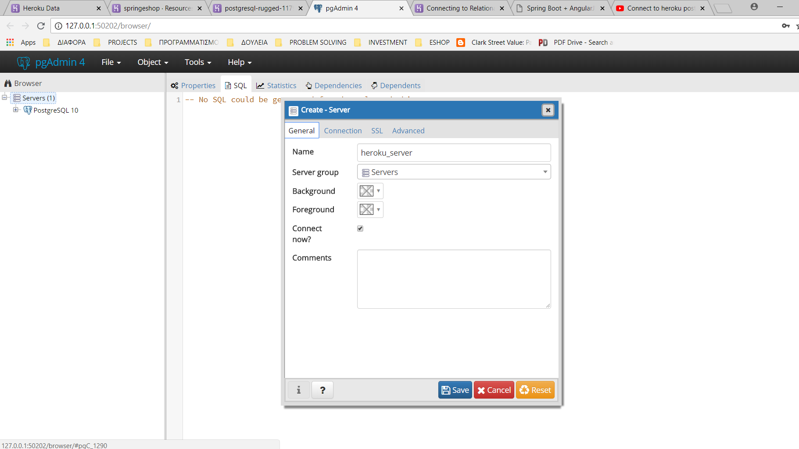

Επιλέγουμε την έκδοση PostgreSQL 10.4, το λειτουργικό σύστημα και πάταμε Download Now
Αφού κατεβεί, κάνουμε διπλό κλικ στο αρχείο postgresql-10.4-1-windows-x64.exe
Στη καρτέλα Select Components, το pgAdmin 4 πρέπει να είναι επιλεγμένο
Στη καρτέλα Password, ζητάει κωδικό για την βάση στο localhost και όχι στο Heroku
Επίσης, με την εγκατάσταση, η PostgreSQL έχει δημιουργήσει μια βάση δεδομένων τοπικά με όνομα postgres, στο server
PostgreSQL. Το URL της βάσης είναι localhost:5432/postgres
και μπορούμε, να συνδεθούμε με username postgres και κωδικό password.
Απομακρυσμένη σύνδεση στο Heroku
Αφού κάνουμε login στο Heroku, κάνουμε κλικ στην εφαρμογή springeshop
Κάνουμε κλικ στην καρτέλα Resources και μετά στο Heroku Postgres :: Database, που βρίσκεται κάτω από τα Add-ons
Στη καρτέλα Settings, πατάμε View Credentials στην ενότητα Database Credentials
και εμφανίζονται τα στοιχεία της βάσης
Συγκεκριμένα έχει το όνομα του Host, το όνομα της βάσης, το username ,
το password και το port
Ανοίγουμε το directory C:\Program Files\PostgreSQL\10\pgAdmin 4\bin και κάνουμε διπλό κλικ στο pgAdmin4.exe,
οπότε ανοίγει μια καρτέλα στο browser στο http://127.0.0.1:49814/browser/
Στη στήλη Browser, κάνουμε δεξί κλικ στο Servers -> Create -> Server..
Στη καρτέλα General, δίνουμε όνομα heroku_server

Στη καρτέλα Connection, συμπληρώνουμε το Host name/address,
Port, Maintenance database, Username και
Password, από τα στοιχεία της βάσης στο Heroku
Αφού τα συμπληρώσουμε, κάνουμε κλικ στο Password και πατάμε Save
Άμα κάνουμε κλικ στο server, βλέπουμε ότι έχει πόλλες βάσεις, εκτός από τη δική μας. Για να φαίνεται μόνο η δική μας βάση, αρχικά αποσυνδεόμαστε από το Server, εάν είμαστε συνδεδεμένοι,
κάνοντας δεξί κλικ στο heroku_server -> Disconnect Server
Μετά κάνουμε πάλι δεξί κλικ στο heroku_server -> Properties
Στη καρτέλα Advanced , πληκτρολογούμε το όνομα της βάσης στο πεδίο DB restriction και πατάμε Save. Τώρα
θα πρέπει, εμφανίζεται μόνο η δικιά μας βάση.